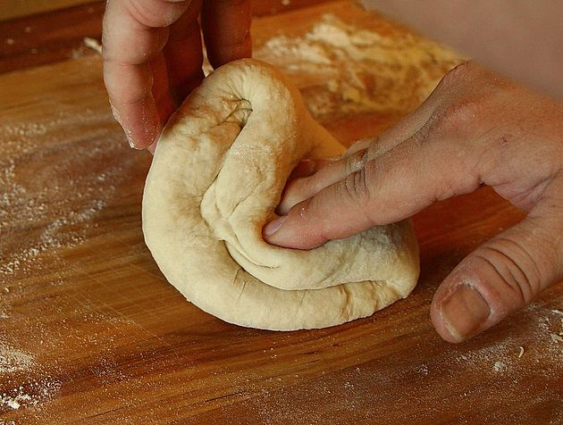
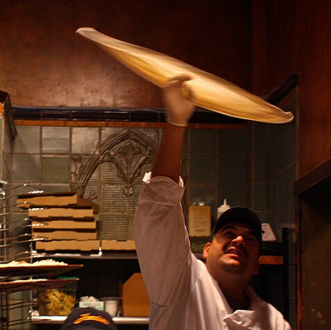
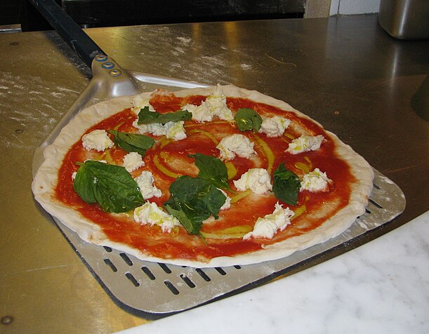
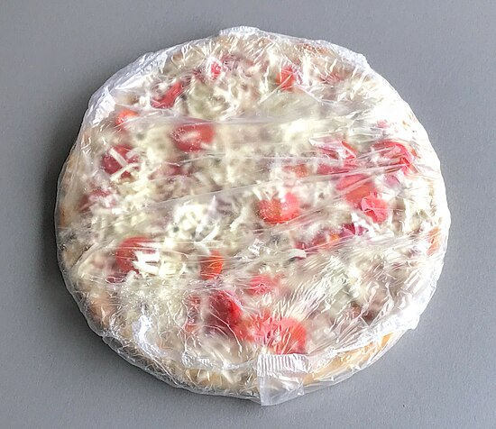

What is pizza?
Pizza[a][1] is an Italian dish typically consisting of a flat base of leavened wheat-based dough topped with tomato, cheese, and other ingredients, baked at a high temperature, traditionally in a wood-fired oven.
The term pizza was first recorded in 997 AD, in a Latin manuscript from the southern Italian town of Gaeta, in Lazio, on the border with Campania.[2] Raffaele Esposito is often credited for creating the modern pizza in Naples. In 2009, Neapolitan pizza[7] was registered with the European Union as a traditional speciality guaranteed (TSG) dish. In 2017, the art of making Neapolitan pizza was included on UNESCO's list of intangible cultural heritage.[8]
Pizza and its variants are among the most popular foods in the world. Pizza is sold at a variety of restaurants, including pizzerias (pizza specialty restaurants), Mediterranean restaurants, via delivery, and as street food.[9] In Italy, pizza served in a restaurant is presented unsliced, and is eaten with the use of a knife and fork.[10][11] In casual settings, however, it is typically cut into slices to be eaten while held in the hand. Pizza is also sold in grocery stores in a variety of forms, including frozen or as kits for self-assembly. Store-bought pizzas are then cooked using a home oven.
In 2017, the world pizza market was US$128 billion, and in the US it was $44 billion spread over 76,000 pizzerias. Overall, 13% of the US population aged two years and over consumed pizza on any given day.[13]
Povratak na vrh
History
Records of pizza-like foods can be found throughout ancient history. In the 6th century BC, the Persian soldiers of the Achaemenid Empire during the rule of Darius the Great baked flatbreads with cheese and dates on top of their battle shields[26][27] and the ancient Greeks supplemented their bread with oils, herbs, and cheese.[28][29] An early reference to a pizza-like food occurs in the Aeneid, when Celaeno, queen of the Harpies, foretells that the Trojans would not find peace until they are forced by hunger to eat their tables (Book III). In Book VII, Aeneas and his men are served a meal that includes round cakes (such as pita bread) topped with cooked vegetables. When they eat the bread, they realize that these are the "tables" prophesied by Celaeno.[30] In 2023, archeologists discovered a fresco in Pompeii appearing to depict a pizza-like dish among other foodstuffs and staples on a silver platter. Italy's culture minister said it "may be a distant ancestor of the modern dish".[31][32] The first mention of the word pizza seemingly comes from a notarial document written in Latin and dating to 997 CE from Gaeta, demanding a payment of "twelve pizzas, a pork shoulder, and a pork kidney on Christmas Day, and 12 pizzas and a couple of chickens on Easter Day".[16]
Modern pizza evolved from similar flatbread dishes in Naples, Italy, in the 18th or early 19th century.[33] Before that time, flatbread was often topped with ingredients such as garlic, salt, lard, and cheese. It is uncertain when tomatoes were first added and there are many conflicting claims,[33] although it certainly could not have been before the 16th century and the Columbian Exchange. Pizza was sold from open-air stands and out of pizza bakeries until about 1830, when pizzerias in Naples started to have stanze with tables where clients could sit and eat their pizzas on the spot.[34]
Povratak na vrh
Preparation
Pizza is sold fresh or frozen, and whole or in portion-size slices. Methods have been developed to overcome challenges such as preventing the sauce from combining with the dough, and producing a crust that can be frozen and reheated without becoming rigid. There are frozen pizzas with raw ingredients and self-rising crusts.
In the US, another form of pizza is available from take and bake pizzerias. This pizza is assembled in the store, then sold unbaked to customers to bake in their own ovens. Some grocery stores sell fresh dough along with sauce and basic ingredients, to assemble at home before baking in an oven.
Pizza preparation
|

|

|

|

|
| Pizza dough being kneaded before being left undisturbed and allowed time to proof |
Tossing pizza dough to stretch it |
An unbaked Neapolitan pizza on a metal peel, ready for the oven |
A wrapped, mass-produced frozen pizza to be baked at home |